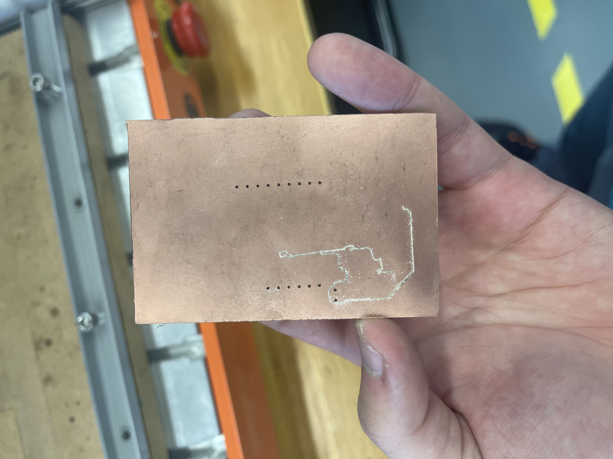
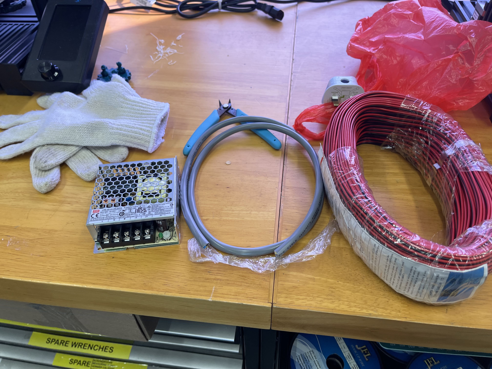
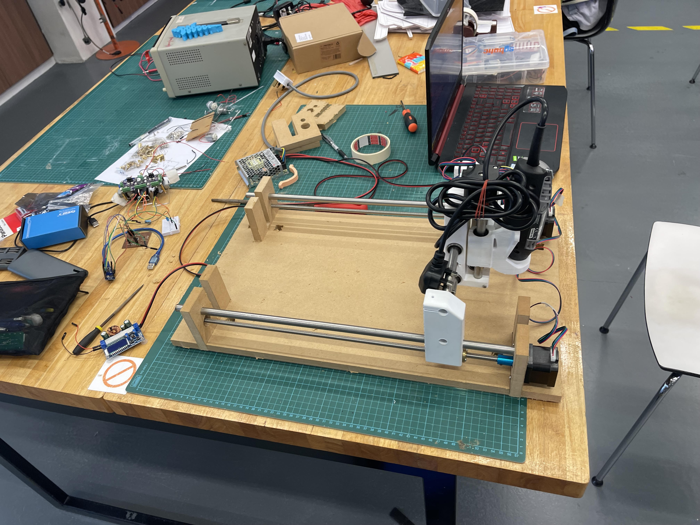
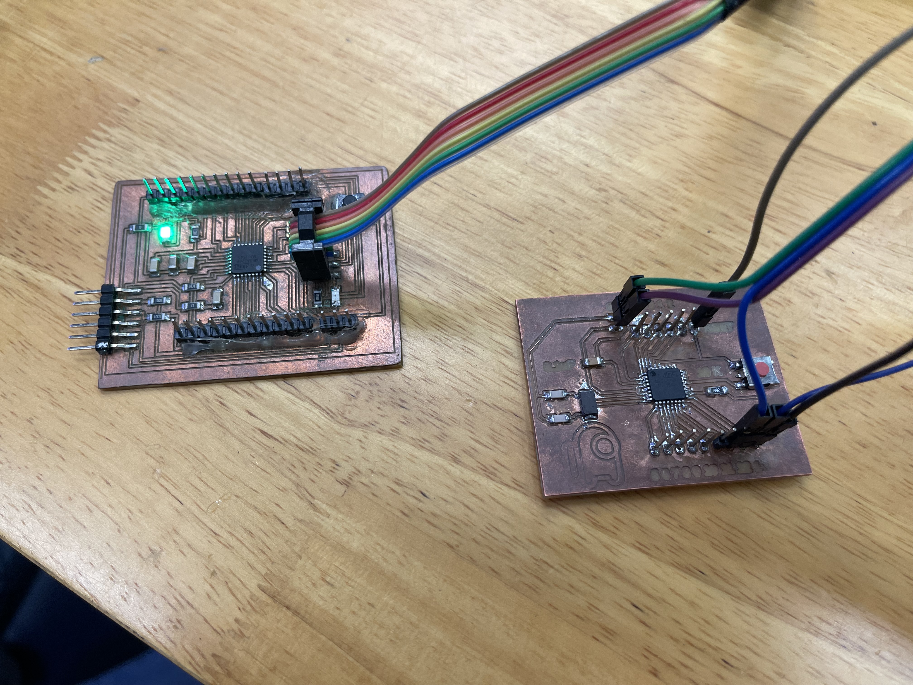
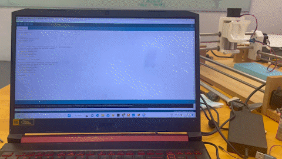

Project Title: CNC Router
Final Project
For my final project for EP1001, I chose to make a CNC router to challenge myself. The cheapest CNC router that I could find on the internet cost $633.96. Therefore the main goal of this project is to make a CNC router that is cheaper than the one I could find on the internet.
What does it do?
The CNC router will take G-code files I send from my laptop to the cut out designs onto whatever material I place on the board.
What are it's features?
The CNC router will use an ATmega328 PCB with GRBL which is an open source parallel-port-based motion control for CNC milling.
Preview
| Presentation Slide | 1 Min Video |
|---|---|
Project Download link

| Requiements | |
|---|---|
| 2D and/or 3D designed part(s) | The CNC router consist of both 3D printed parts and CNC milled parts. |
| subtractive manufacturing (i.e. cnc) part | The entire base of the machine is made from Medium Density Fibreboard. |
| An embedded microntroller that you designed & fabricated | I used an ATmega328p. |
| input and/or output device(s) that interacts with the user | I will be using my latop to comunicate with the microcontroller that moves the CNC machine. The microcontroller moves the stepper motors which moves the cutter. |
| embedded program | I will be using GRBL with my own modifications. |
Bill of materials
| Sn | Qty | Item Description | Approx Cost |
|---|---|---|---|
| 1 | 4 | Nema 17 Stepper Motor (40mm height) | $14.00 |
| 2 | 1 | CNC Shield V3 Engraving Machine + A4988 Stepper Motor Driver | $7.91 |
| 3 | 1 | Medium Density Fibreboard | Fablab |
| 4 | 2 | 500mm, 330mm, 120mm (12mm) Stainless Steel Rods | ~$30 |
| 5 | 2 | 500mm, 280mm, 120mm (8mm Lead Screws) | ~$30 |
| 6 | 6 | 12mm X 57mm Linear Bearings | $76.90 |
| 7 | 6 | 608 Ball Bearings | $6.00 |
Documentation:
Overview:
Ideation:
| Design | Explaination |
|---|---|
|
This is the $633.96 tabletop CNC router I was refering to eariler. It has a "fixed" X-axis carriage. It has a Working area of 126mm*88mm*38mm which is good for PCB production and engraving small pieces of material. However, I am looking to make something that has a bigger Working area for bigger projects. |
|
|
This is the CNC router used in school called the Stepcraft 420. It has a Working area of 298 x 415 x 132 mm. It uses two stepper motors to move the X-Axis Carriage. Unlike the other two CNC routers on this list, its Z-axis carriage uses ball bearing instead of linear bearings. The ball bearings appear to travel a long a aluminimum groove which might provide better stablity compared to using linearing bearings. I like the design of the X-axis carraige as it does not block the working area of the router. |
|
|
This a homemade CNC machine. It has a varaible design allowing for a a custom working area with how the parts are made. Similar to the step craft in school, the homemade CNC router uses two steppers to control the X-Axis Carriage. I like the spindle carraige for this design as there is a part that fits a Dermel Rotary Tool which is a item I alraedy own which can be used as a spindle. |
Research Conclusion:
In Conclusion, I will be incorporating the certain aspects of the Homemade CNC machine and the Stepcraft CNC router. I like the idea of have an X axis that isn't blocked by the lead screw and rods of the machine. Additionally, having a spindle carraige where I could use my own rotary tool as a spindle is ideal as it would cut down on the wiring I would have to do.
Design Cad Model:
| Design | Explaination |
|---|---|
|
Design 1 is mostly based off of the homemade CNC machine design using aluminimum profiles for a base as the profiles are modular allowing it to be assembled easily with L backets. However, this design does not fit one of the requirements as parts of it has to be made with a subtractive manufacturing part and the only part I plan to make using subtractive manufacturing is the sacrificial board of the router. |
|
 |
Design 2 uses the idea from the stepcraft machine it has a similiar working area of both designs but for this design, I lowered the height of the Y - Axis stepper similar to the stepcraft router. I would have gone with this design if it weren't for two issues I encoutered after I designed it. The X-Axis Carraige was just enough to fit in my printer, but the working height wwas only 18mm. With how big the piece is, it would take (28 Hours and 38 Mins) to print out the entire piece using my settings for the design. Another issue with this design was the amount of pieces I would have to make for it. The total number of pieces of this design is around 20 pieces, which is time consuming. The more pieces also meant that there are more factors to the overall sturcture of the design so if a piece is to big or small I would have to redo it again. |
 |
Design 3 takes aspects from both designs. The main goal of this design is to reduce the amount of parts I need to CNC and reduce the overall size of the 3D printed parts to fit within the fablab printing requirements. I managed to reduce the amount of pieces for the base going from 20 pieces to 9 pieces. The size of the piece is also reduced so that the overall print time is (3 hours and 30 mins) which is just barely over the limit of allocated printing time. |
Additional Design ConstraintsTo prepare for this project in advance, I had preorder the materials in advance before the chinese new year. This left me with a Design Constraint. The pic shown on the left is the linear bearing I ordered for this project. I saw many different poeple recommend this type of bearing for this project, not knowing why but as a preparation for my designs, I decided to get them in advance. |
|
|
I later found out a few days later about these type of linear bearings. These "Pillow Block" Bearings are much better for CNC machines as some machines actaully use them, they have pre existing slots for you to mount the bearings onto a flat surface. This would offer more freedom in my design. However, since I have already bought the linear bearings shown above, I decided to stick with them as not to waste my money. This has handicapped me in terms of designs since I did not want to spend additonal money on a different sets of bearings and waste the ones I had already. |
Material Explaination
| Example | Explaination |
|---|---|
|
Infill Pattern ComparisonFor my CNC router design, I had to factors to consider while desgining it. One of these includes the infill pattern used while 3D printing the parts. Since part will undergo alot of load therefore I needed a part that handle both perpendicular and transverse load. Therefore I chose the trianglar infill pattern for my 3D printed part. |
|

|
Infill Density ComparisonInfill Desnity also helps with the stress distribution of the load on the router. Generally the higher the infill the stronger the part is. However, there is a diminishing return for the Infill Desnity, ideally I would use 100% infill but due to material cost, print time and other factors, it is better to try to find a sweet between everything. I generally found a sweet spot for my parts around 20% - 30%. This allows me to hit the 3 hour printing limit of the fablab. |
3D print material ComparsionAll of my 3D printed parts are printed with PLA+ or PLA-F both of which are better than PLA at least that's what I can find about them. PLA+ is stronger, more flexible, and more ductile than PLA and PLA-F is the results of combing PLA with ABS for a stronger material. Additonally, if I had access to print with PETG I would have taken it. The cost of PETG is almost the same and both of them are easy to print but PETG is a little bit more flexible so it's harder to break it which is more ideal for this project |
|
Base Material ComparsionMy original plan was to use plywood to make the base since I thought it was the only material available at the fablab. I was informed that there was another material available at the fablab as well. Medium Desnity Fibreboard or MDF for short. After doing some reserach, I decied to go with MDF for two reasons. MDF is more dimensionally stable and more load resistant than plywood. |
PCB Design
| Example | Explaination |
|---|---|
|
Choosing a Chip to useBefore I began making the PCB, I had to decide what microcontroller to use. My mentor advice me to pick of the 4 microcontrollers to use.
|
|

|
Creating a design for the ATmega328For the ATmega328 schematic I had to design, I had to include certain parts for the chip to work. These are
|
|
This is my PCB board design I have all the digital pins, a reset button and a crystal oscillator. I even labelled the pins so I know which pins I am looking at. I had to keep the Mosi, Miso and SCK pins to progarm the board. and the RX and TX pins for the serial port. |
Code Explaination
| Picture | Explaination |
|---|---|
|
For grbl, I had to configure parts of the code used for my CNC machine. The way these settings are configured is through the serial monitor. These settings are applied differently depending on the machine. Thus I had to do some trial an error for the code. I managed to a narrow down 3 settings that I had to change for my CNC machine to work and modified them with the following values.
|
|
|
To control the CNC machine, I use Universal G-code sender. Unversal G-code sender is a free software that I use to control the CNC machine, it communicates with the machine via by using the ATmega328's serial port. |
Fabrication:
| Image | Explaination |
|---|---|
PCB Fabrication.The PCB shown in this picture is for an ATmega328p. It looks very clean and the entire process of making this board was a learning experience with many trials and errors. |
|
|  | Error 1: Sercure the PCB properly, since the PCB uses 0.15 mil traces I had to be precise. I cannot afford simple mistakes like this where the piece came lose. Additionally it helps by taping up the sides to properly sercure it. |
 |
Error 2: Use proper tool bits. this mistake was made when I used a already blunt tool bit. Although it was difficult to tell what tool bit I was using after cutting for a while I realised the traces were too big and had to restart. |
 |
Error 3: Proper settings. Due to how accurate the milling had to be for the ATmega328p, I had to increase the spindle speed and decrease the feed rate for a more accurate cut. However this comes at a lost. The tool bit by wear off faster so it maybe handy to keep some spares on hand or adjust the Z axis bit by bit. |
| After learning from all my mistakes, I managed to properly mill the PCB board! | |
 |
Lasty, don't forget to give the board a proper sanding to remove the bur on the pad so it helps with soldering. Use a wire brush to remove the copper dust trapped between the traces and rinse it with water and soap to clean it. (Yes it helps.) |
 |
Soldering on the ATmega328p for the PCB. I found out getting the corner pins helps with soldering. Due to how small the traces are it is best to use as little solder as possible. |
 |
I made a mistake with my PCB design I used a smaller tab for my osicallator clock so the 16 MHz clock does not fit. |
| I was given a 20MHz clock, I was told it should not affect much I just have to change bits of the code and the settings under tool. | |
| Final PCB. I realised I forgot to add addtional 5v and GND pins for to power the CNC motor shield so I would have to solder wires for that. I only need 7 pins X, Y, Z Step and Dir and enable. Pins 0 & 1 are my RX TX so they can't be touched. That leaves me with 4 unused pins with is good as they can serve as backup pins incase one of the existing pins break. I made a mistkae on pin 7 where parts of the traces is not stuck to the board. Although I have fixed it for now, I still have 4 backup pins to use in case it breaks. | |
 |
 |
 |
CNC MillingSince MDF was stronger than plywood, I had to increase the feed rate to ensure a smoother cut. |
 |
All 9 pieces finished fabrication. I made an addtional piece for me to cut during a demo. |
Intergration
Intergration is the hardest part of any projects. I learnt from my last EP1000 projects not to make any jurassic last minute changes so the process was abit smoother and less stressful.
| Image | Explaination |
|---|---|
 |
Spindle Carraige Assembly Prep
|
| I found out one of the ways to fit the bearaings into the part is to use a vice to push it in. | |
 |
Testing the rod fitting into the carraige |
| Testing the stepper if it fits into the rod | |
| X and Z axis carraige complete.. | |
| Testing if the Z Axis carraige can move along the Y axis. | |
| Assembling the X Axis Carraige I placed a bearing inside non motor holder mount to support the lead screw. | |
|  | Assembling the power supply. |
| This is the power supply assembled with a thicker gauge wire to handle the 24 volts. | |
| I had to assemble the CNC Driver Shield and tune the voltage to meet the stepper motor requirements. The yellow cricle highlights the part where I have to screw the change the voltage. To test the volatge I had to use a mutlimeter and place one end on GND and another one the screw itself. | |
| I was not able to get the datasheet for the stepper motor so as a precaution I set it to the voltage shown here. | |
|  | This is the CNC machine fully assembled. |
 |
Using arduino uno to test the code for the CNC. |
| Using an ISP progarmmer to progarm my board. | |
| Getting errors and difficulties with progarmming the board. | |
|  | I borrowed a diiferent PCB with an ATemga328. This is identical to an Arduino uno. |
| A bootloader is installed so I can progarm it with my FTDI PCB. | |
| Running the test code worked. | |
| Swiching the header from the arduino with the PCB | |
| Testing the board with grbl uploaded. |
Issues Faced.
During intergration, I encountered an issue with the board itself. When I was testing the machine, I used an arduino to test if it works and it did. However, when I would use the board, the machine would not even move. Which was an issue since I was not able to get it to work the way I intended. To troubleshoot this issue, I created a test code to test if it was the chip problem or the stepper drvier issue. The picture shown below is the test code I used to troubleshoot the machine.
The code was simple, it told which axis the stepper motor was connected to move a certain distance and then told it to go in reverse afterwards. Then it would change which axis of the stepper motor it would control.
It worked.
Unfortunately, I was not able to debug the issue.
Reflection
After finishing this project, I managed to pick up some useful advice. The scope of my project was too big to work on for this module. If I had more time I would have assembled the CNC machine sooner and discovered the board issue. However I was not able to do it on time. Some additional changes I would have made were the ability to have different spindle mounts as the one I was using was only worked with the dereml I was using.
In Conclusion, I've learnt alot from this project. It was quite the leap from my preivous EP1000 project and I certainly gotten alot more new experiences. I never thought I would have make a CNC machine in 4 weeks let alone see it actaully work. The time spent on this module was the most fun I had in quite sometime and I am not going to stop making stuff. After this module, I will find sometime to improve on my machine.